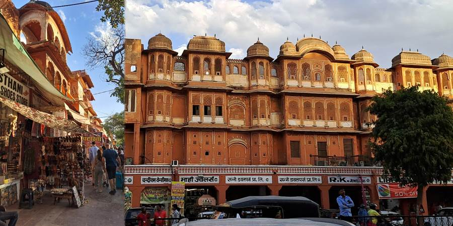
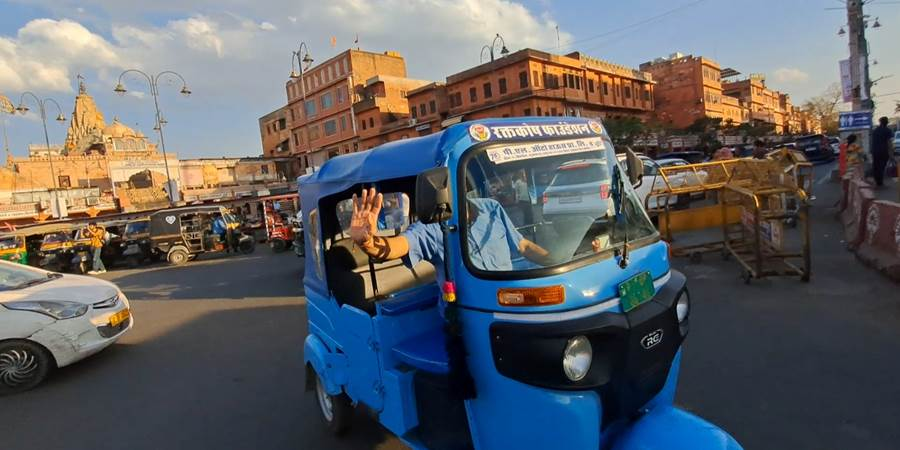
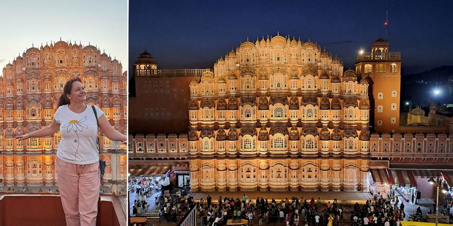
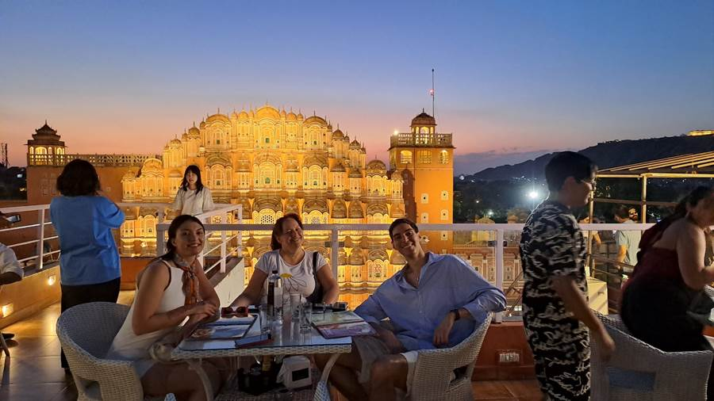

Šesti dan, Jaipur: Ružičasta čarolija
Ustajemo, taksijem idemo do voza u nekom mestu pored. Puškar je mali, nema železničku stanicu. Iz taksija nestvarna slika, žao mi je što nisam uspela brzo da odreagujem da slikam. Sedi čobanica u živopisnom sariju na nekom zidiću, gleda u mobilni telefon, oko nje gomila majmuna, a ispred koze... Kakva slika! Za poster.
Železnička stanica je kao naša u Novom Sadu pre renoviranja. Stigao voz. Nema ljudi po krovovima vagona ko na slikama Indije. Svi smo imali svoje mesto da sednemo. U vagonu na plafonu dva reda ventilatora, prijatno, osim smrada iz wc-a koji je identičan kao u našim vozovima Beograd Bar. Soko je sad lep nov, mislim da još nije tako smrdljiv. Vodič Nikola nas je upozorio na transvestite koji prose i koji se baš iznerviraju i viču i kunu ako ništa ne dobiju jer im to znači lošu sreću. Baš sam iščekivala da ih vidim ali ih na žalost nije bilo. Sedišta u vozu su po njihovoj meri pa nam je bilo malo usko. Nas tri smo se gurkale a mene je žuljala neka plastika koja je predviđena da bude pored sedišta. No, brzo smo stigli u Jaipur.
A, Jaipur! Ljudi moji. Pa to je nešto prelepo. Zovu ga Pink city jer je sav ofarban u pink, ja bih rekla narandžasto a neko terakota. Kako god, kad im je dolazila engleska kraljica Viktorija, tadašnji vladar je naredio da se sve oboji u pink jer je to boja dobrodošlice i od tada tako farbaju. Uz onu njihovu kitnjastu arhitekturu sa lukovima, kupolama, ukrasima... Još pri pogledu iz autobusa sam se zaljubila u ovaj grad. A šta nas je tek još čekalo. Kažu da je tu snimana serija Mala nevesta što meni, na žalost, nije ništa značilo ali sada je možda i pogledam.
 Dolazak u hotel koji je lep. Ručak švedski sto. Ajme. Još imaju i onaj zeleni sos na koji sam se navukla. Izbor je gomila jela, toliki, da i kad od svakog uzmem samo da probam, nakupi se.
Prozora ima ali kažu ne otvarajte, ući će majmuni i pokrasti vas. Otišli do trafikica pored da kupimo vodu, pozdravili usput komšije majmune u dvorištu.
Kad viče za nama prodavac i to baš se trudi, viče. Reko sad će ko onaj Turčin taksista da proba da nas prevari da nismo dali dosta, već se narogušila, kad on nas doziva da nam vrati kusur. Oo.
Krećemo ali pre obilaska idemo u prodavnicu začina i čajeva. U početku je i bilo interesantno ali na kraju mi se zavrtelo u glavi od svih mirisa koje su nam dali da njuškamo.
Bili smo i u prodavnici njihove tradicionalne odeće i u prodavnici nakita na ovom putovanju. Generalno sve može da se nađe puno jeftinije nego na tim fensi mestima pa se tu slabo šopingovalo.
I prvi obilazak, Hawa Mahal, Palata vetrova. Ne vredi opisivati. Prelepa je. Kao saće. U svakoj sobici bila po neka cicika za vladara i odatle posmatrala ulicu. Ima i šarenih prozora.
Posle smo išli na bazar gde je bilo svačega. Ja našla moj glamurozni sari za slikanje pred Tadž Mahalom. I zlatnu tiku za čelo, boja zlatna, nije od zlata. Za koju mi je tražio 1500 rupija. Ma kakvi, u Puškaru su bile 150 (rekla meni Maja).
Kaže on ajde da se cenkamo. Rekoh ajde. Kaže on 200, ja opet: “u Puškaru su bile 150”. I tu se cenkanje završi, dade on meni za 150. Kakvo uspešno cenkanje. Najbolje u mojoj skromnoj istoriji cenkanja. Spustila sam cenu deset puta.
I tako šoping, kad ti se ja odjednom setim da zalazi sunce i da hoću sliku zalaska uz Hawa Mahal. Samo sam uzviknula: zalazak i otrčala, one ostadoše u čudu ali od šopinga ipak ne odustaju. Maja se čudila zašto nisam iznela na plenum, ali plenuma ne, plenuma nema, ja odoh.
Bilo je čarobno. Otišla sam na rooftop bar preko puta, Tatoo, koji ima najbolji pogled. Čak i nije bila neka gužva za slikanje. Njih dvoje, troje. Ne kao red u Japanu od nekoliko sati. Ovde nema overturizma i to mi se jako sviđa.
Konobar je, duša, video da nema ko da me slika i izašao je on da me slika. Izbliza, podalje, svakako.
Prišla mi je jedna turistkinja i pitala kako sam, mi stranci treba da se proveravamo kako smo i imamo li problema jer je Indija izazovna. Onda su me od gore videli Aleksa i Milena i pozvali me da im se pridružim. Potpuno sam bila ganuta. Ne pamtim kad je neko toliko vodio računa o meni.
 Posle su nam se pridružili i ostali mladi. Uživali smo u večeri i muzici. Jedna mlada Indijka je slavila rođendan za stolom pored. I mi smo joj pevali Happy Birthday, pa je došla da nam se zahvali i počasti nas tortom. Druga je nosila tortu na tacni a ona istom kašikom svakom zagrabila po torti i tutnula u usta. U Indiji gde i zube peremo flaširanom vodom bojeći se problema sa stomakom. Ja sam uspela da se odbranim od torte i kašike.
Milena, Aleksa i ja smo zajedno krenuli kući, tuk tukom, ali smo svratili usput u jednu prodavnicu da Milena vidi marame. Trgovac, vadi, pokazuje, nudi popust, a da bi ubedio Milenu obraća se i meni sa “Mami”, kao da sam ja Milenina mama. A ja rastem kao kvasac, milo mi. Gle, kakvu decu imam. Spustili smo cenu za tri kašmirske marame sa 9000 rupija na dve i nešto, ali nije to poenta. Poenta je da su me do kraja puta zvali “Mami” na moje oduševljenje.
Inače, oni su vrlo poznati tiktokeri kod nas, pa opet toliko smireni, predusretljivi, fini, druželjubivi, sve rade sa lakoćom, bez tenzije, prosto je milina biti sa njima. Moje čak tri mlade komšinice su videle objave na društvenim mrežama i sa sjajem u očima pitale: “Ti njih poznaješ?”. Tek sam tad shvatila kolika je njihova popularnost.
Stigli u hotel. Imali smo najavljen neki šou. Kako smo mi došli tako je par turista otišlo. Ostali smo sami u restoranu. I samo za nas je bio performans. Ženica plesala sa dva ćupa na glavi. Onda je lutka na koncu plesala uz sve “Bella ciao”. Imali smo i bend od dva svirača. Jedan je lupao doboš a drugi svirao harmoniku. Baš sam poslala Dušku snimak brata po harmonici. Jedino što se kod njih harmonika ne svira stojeći nego se sedi na podu, i harmonika je na podu. Postoji jedan deo harmonike kao velika korica od knjige i sa tim se mlati i dobija efekat razvlačenja harmonike. Baš neobično. Videla sam na tri mesta kako sviraju harmoniku. Možda bi se Dušku i svidela Indija.
Ne propustite sledeću avanturu!
Kad Sandra krene u novi kraj sveta, vaš inbox prvi sazna. Prijavite se i stižu vam sve nove priče mejlom.